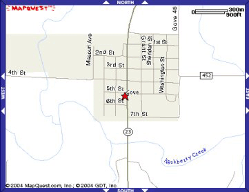
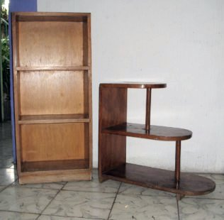

The second half of the year 1953 brought many significant events and changes to my life, some good, some undesired. Unbeknownst to me, my father was making plans to take me and my brothers from the farm to live with him. Though I didn't understand it at the time, he had every right to do so. The divorce proceedings two years before had granted him full custody of his sons. So it was all quite legal. The only trouble for me was that I was really beginning to enjoy life on the farm. That bond was made even stronger by the fact that Grandmother bought another horse. It was a white stallion, named Joker. And she bought a real saddle and bridle in order to properly ride him. He made me feel almost like a real cowboy. Now I could dream of being the Lone Ranger or other such heroes of the old west. Only later in my life did I realize that part of Grandmother's incentive for this act was to gain favor with me, to increase my attraction and desire to stay on the farm with her. As has been alluded to earlier, my father was not her favorite son-in-law. Add to that the fact that my mother was an only child and the truth behind her act of generosity becomes more evident.
She also laid before me the promise of another goal of mine - to have a tractor to drive around the farm to make the chores easier. I had begun to learn some of the basics of driving with Ol' Jerry, so it seemed natural to extend the matter toward the practical side of things. I replaced my heroic dreams of rescuing Sarah from kidnappers with visions of me driving a John Deere in the alfalfa fields. Not a big one at first, just a medium sized machine, capable of pulling a trailer to bring the bales of hay to the barns. What fun that would be!
Another promising development began to appear on the horizon regarding Patty D. For all the time I lived in Caney, Grandmother took us boys to church and Sunday School at the Methodist Church. After the public school year was over each year, the church held a 2-week session of religious classes called "vacation bible school". Patty and I had been asked this year to help oversee some classes for little children, so we struck up an interesting relationship. One day as we left the church and were walking along the sidewalk headed towards the business district, we began talking about next year in 8th grade. She told me that she had been taking music lessons on some band instrument, hence would be joining me in the band as well. "Hmm, that would mean other classes together as well. Gee, maybe my love life was going to change for the better after all, " I thought. I even thought I detected an encouraging smile forming on her lips and saw some sparkle in her eyes. Was Cupid busy at work that day with a little target practice? Sadly, we'll never know the answer to that question.
The scene now returns to my father again. He had obtained a job as a school teacher and principal at a small town in another part of Kansas: Gove. And talk about being opposites. Geographically, Gove was in the northwest corner; Caney was in the southeast. As to climate and terrain, Gove was flat, dry, dusty, and virtually treeless; Caney had lots of green trees, more rain, and hills. Gove had a very small population; while Caney was no metropolitan area, there were considerably more people there. [Though different in the '50s, current population figures -- roughly 105 for Gove and 2,092 for Caney -- can give some indication of their relative sizes.]
* *** * Be that as it may, I still had to leave Caney first. And I didn't go willingly either. After all, look at all the good things that were in my life now, or possible things: a horse to ride, a pleasant life style on a farm with animals, some friends that I had gradually made the past two years, a future girl-friend to talk to, a chance to play basketball on a real team, and a future tractor in the wings. What more could I wish for?
An appearance in court was certainly not on my wish list. But when my grandmother said she wanted that we three boys stay with her, Dad had no recourse except to put the matter in front of a judge. One day in mid-August, Grandmother, her lawyer, and we boys traveled over to the county seat of Montgomery County to confront our dad. She probably had been advised by her lawyer that our case was thin, so she had coached us boys to put on a show before the judge. Crying like 5-day-old puppies who have been separated from their mother's teats at feeding time, we did it up brown! We cried streams of big tears, clutching our grandmother's hands as if to signify death was preferable to separation. Fortunately, the judge was not moved by our amateurish theatrics. Our father received custody. Case closed.
On the trip back to the farm, all I could think about was that all my beautiful dreams had just gone up in smoke. No basketball team, no tractor to drive, and I wouldn't even be able to say good-bye to Patty. (I've always wondered if she missed me.) Once back on the farm, we packed up all our clothes and other important belongings, then said good-bye.
Our next stop on our westward trek to Gove was Wichita, Ks. Dad had been living and working here, as mentioned before. He needed to pickup some of his own things, of course, and present us to another person who was to become part of my saga. Her name was Mary Showalter. She was a rather successful business woman, the owner of at least three restaurants in the city. Dad had met her when he worked as a cook in one of them. Apparently this owner-employee relationship turned romantic at some point. We boys were now told that Mary and our father were to be wed soon, probably during the Christmas vacation time from school the coming December. Any concern I may have felt by the fact that she was about 4 years older than Dad faded away when I looked around her elegant house and saw one of those new-fangled things called a television set. I watched station KEDD, channel 16, during our short stop and later on for Thanksgiving in November and the wedding in December. (It was at one of those times that I saw the movie about the 6-letter inscription on the ring that some lover gave to his beloved, which inspired me to do likewise on the ring that I gave to Gloria at our wedding.)
Mary began hinting that perhaps during summer vacation, we could live in Wichita and I could work in one of her restaurants part-time. Other attractions would include going swimming at the large municipal pool and taking afternoon trips to a well-known amusement park, called Joyland. Things were perhaps not going to be too bad, I thought.
* *** *
After our lay-over in Wichita, we all loaded up in the car and headed for parts unknown. It was a rather long journey to be sure, and a hot one as it was late in August. And I was still a little hot under my collar. I didn't want to go, so I sat in the back seat, scowling all the way. For awhile, Gary joined me in my anger. But eventually he joined Corky in the front seat. I was left to stew in my own juices.
 When we pulled into Gove from the south, I'm sure I was rather surprised at the stark appearance of the scene before me. Flat and small and dry and dusty are the four words that most aptly describe it to a new-comer. Highway 23 cut through the center of town, dividing it as shown in the map. By default a six-block portion of it became the main street.
The house that we lived in was on the west side between 5th and 6th Streets, one block over from main street. [On the map that would be at just about the tip of the letter "h" on the 6th Street indication.] A two-storey structure with a full basement beneath, it was provided by the school for our use. As it had not been occupied for several weeks during the summer vacation, there was a high growth of dry, brown weeds all around, making a great contrast with the lush greenery left behind in Caney a few short days prior.
There were two bedrooms and a bathroom upstairs. Again, as we did in Canton, I got one room by myself and my brothers shared the other. The downstairs bedroom was for our father. The basement was not part of our domain, however. It was for two other teachers, the music teacher (Mr. Varnum) and the 5th-6th grade teacher (Mr. Robson). Mr. Varnum was the band director for the high school. Mr. Robson was Gary's classroom teacher and the basketball coach for the grade school. There was one house to the north of ours, inhabited by the Boss family: a man, his wife, and two children. The daughter, Ardis, was the same age as I, but in the 7th grade. The son, Elwin, was one year younger than my brother, Corky. An elderly lady, something of a recluse, lived in the house to the south of us. These three houses were separated by vegetable gardens. Across the street in front of us was a large lot where the road maintenance department of Gove County kept their heavy machinery.
At this time, Gove actually had two separate school districts, one for the high school (9th to 12th grades) and the elementary system (grade 1 to grade 8). The high school building where Dad taught was on the east side of town, on Washington Street. [On the map, just to the right of the "Wash" part of the street name.] The grade school building that my brothers and I were slated to attend was a mere block-&-a-half from our house. [On the map, it was facing the highway, halfway between 5th and 7th Streets.] It was a simple, gray stucco square-based structure with three classrooms upstairs and one downstairs. Also downstairs was a utility room, usually serving as a lunchroom. The students from both schools could participate in the hot-lunch program or bring their own, as desired. High school students had a rather short walk of about 3-4 blocks to get to the lunchroom. A good way to increase one's appetite and stay in shape. Likewise, any grade school student who could play a musical instrument appropriate for a marching band could participate in the high school band program. So one might call our education systems here as "separate, but cooperating".
I'll always carry fond memories of my 8th grade year in this little 4-teacher school, principally due to my teacher, Fred Crippen. I don't know how long Fred had lived and taught there. I just assumed it had been a long time. He was always held in great respect by all of us students. One day he taught me a lesson in self-reliance that I've never forgotten. It occurred while he was busy instructing the 7th grade group in something. We eighth graders had to use such time to do our homework. I was doing some arithmetic and got stuck on some story problem. I approached Fred to ask for help. In spite of being tied up with another class, he occasionally answered questions brought to him this way. But that day my question must have been too simple to merit such an interruption, or maybe I had gone to him at a bad moment, because after listening to me, he turned to me and in a gruff voice very uncharacteristic of him, said, "You go back to your seat. You can do that by yourself!" or words to that effect. I was quite shocked by his tone, to say the least. I immediately slunk back to my desk and began working on the problem.
Nowadays a teacher who behaves like that will assuredly be visited by the student's parents and have a meeting with the principal the following day. This is now and that was then. There are just two more things that need to be said about this episode. One is that Fred WAS the principal, the chief honcho. Or as is said here where i live now, the mándamas. And two, Fred was absolutely correct. I could do the problem by myself! I had just not applied enough of my own brain power, preferring to have someone else do the thinking for me. There are undoubtedly a few souls out there in this world, ex-students of my math classes, who now understand why I behaved in a similar manner to them. I was just imitating my idol and mentor, Mr. Crippen.
* *** *
Once we got settled into our new home, the next step was to become acquainted with the school kids of this town. Gary usually made friends quicker than I. One way he achieved this goal, I mean besides his outgoing personality, was to use the credit account that our father had set up at Dodrill's Grocery Store. He had often observed Dad buying groceries, then merely saying "Charge it." upon leaving for home. So when Gary wanted to buy a candy bar and get one for a friend, he would simply say "Charge it." and walk out. No need for cash or a credit card. He didn't have any of the former and the latter didn't exist yet on the American economic scene. But this activity came to a screeching halt after Mr. Dodrill told our father about the extra expenses on the monthly food bill. Now Gary had to make friendships the old fashioned way, by earning them.
My first friend was an 8th grade classmate, Robert Anderson. Robert was an interesting character. I think he and I hit it off because he was not as athletic as the other fellows in the group. He lived just about a quarter of a mile west of town in a little house with his parents and brother. Jerry, the brother, was in the 5th grade with Gary. Since I didn't fit in at first in my grade, (I was the "new kid" again), we therefore formed our own little friendship clique. In those days, gun-slinging cowboys was our favorite playtime obsession. We got together frequently in our homes to read comic books about the "heroes of the old west", like Roy, Rogers, Gene Autry, Hopalong Cassidy and the rest. [Do read the second half of the book review linked to Hopalong. It's worth the detour.] But then we took it one step further into reality. About a half-mile south of the Anderson home was an area of dirt cliffs in some farmer's land. A small, but dying creek flowed near these cliffs. Erosion of many years had formed little canyons, perfect for us boys to imagine all sorts of gun battles, like we had read in the comics. We created little caves with some U.S. war surplus foxhole shovels that we bought in Wichita during our stay there in August. Knowing our complete ignorance of excavating such things, in retrospect we were probably very lucky that our caves never collapsed on us. I wonder if our father ever knew about this.
Another item that came into my possession during that same stopover in Wichita was a gift that I received from one of my dad's friends: a high-quality baseball glove. It was not a common glove, but rather the special kind used by a first baseman. That friend also gave Gary a regular fielder's mitt. We always liked to "play catch" with each other in the past, but now that we were older, we were also anxious to put them to good use, really playing the game itself. That opportunity came as soon as school began. Almost every day in the fall and the spring when we had recess, the boys all headed out to the ball diamond at the south end of the large playground to play a quick game of workup ball.
I had learned this manner of playing baseball back in 1950 during my second session of summer school in Pittsburg. It begins by having at least three persons ready to be batters while the rest of the players take the various defensive positions on the field. This was usually done on a first-come-first-served basis. The first three to get to the area were the batters, then came the catcher, pitcher, 1st baseman, 2nd baseman, and soon on. As soon as the defensive guys could put out any batter, that batter went to the outfield, and the pitcher moved up to catcher, 1st baseman became the pitcher, and everyone else moved up a position. Sometimes it was hard to move up if the batters were successful at maintaining their status. But that's the way things go in workup. Be that as it may, I liked to go directly to first base so I could have an opportunity to use my neat-o first baseman's glove. No one else had a glove that could come close to it. Recess didn't last too long anyway. The game was not for real either, but the fun sure was.
Beside the grade school building on the north was a large gymnasium. The exterior was covered in laminated metal much as would be used on a large machine shed on some wheat farm. The interior was done in naturally colored wood paneling. Really quite warm in its appearance. There was a stage at one end of the basketball court where dramas and other ceremonies could be presented. When basketball season began in November, it was a hotbed of sporting activity for both the grade school athletes as well as those from the high school. The old high school building had a basketball court in the semi-basement of the building, in a style common to many schools around the state, and I assume throughout the nation. But it was too small to be of use for proper athletic competitions in those "modern" times, hence it was only used for some practice sessions or informal play. I did spend a lot of my free time alone there just shooting hoops, because, well my dad was the principal of this site. He was the other mándamas for the schools in town.
The athletic league that my school belonged to had two weight divisions for the boys' teams: heavies and midgets. To be classified for the midgets, one had to weigh 95 pounds or less. Anyone could play in the heavies division if he was so inclined. As my weight was usually around 93-94 pounds, I could play in either level, but mostly the lighter one. As mentioned above, Mr. Robson was the coach. Unfortunately I must say, he was not a few good one either. I don't know if he had ever tried coaching before, but based on how he ran our daily practice sessions, it's rather doubtful. It seems like all we ever did was run relay races up and down the court, dribbling the ball. Oh, we also had scrimmage practice, but we were just doing what we had learned at other times from other coaches. He didn't have a plan or style of his own. It got so bad that Mr. Crippen pretty much stepped in and took charge of things. We boys could certainly see a difference in leadership thereafter. (See photos HERE.)
* *** * During the Christmas vacation this year my dad got married. The lady, Mary, mentioned above, had a church ceremony arranged for December 31. It was a nice event. There was not a large number of guests attending, mostly friends. After saying the "I do's" part and the kiss, Dad and Mary turned around to walk back down the aisle. The very moment that they passed by me, I looked up at her, smiled happily, and said, "Hi, Mom!"
But of course, I was delighted to have a mother again in the house. I knew she would be bringing with her a nicer level of furniture for our house. Since our arrival in Gove four months earlier, we had been making do with the barest of furniture, some of it homemade. Now we would have things in the living room like real sofas, easy chairs, curtains, rugs, and that very special of items: the TV set. In those days, television was in its infancy in that region of the state. Very few households even had a set. The nearest station was quite distant, so the reception was often rather bad. There was a running joke going around town. When you were invited to someone's home to "watch some tv", the image was frequently snowy and the sound was hard to distinguish. Your host would then quickly say, "Oh but you should have been here last night. It sure was good then."
Unfortunately, this marriage was not destined to last long. Two or three months after bringing all of Mary's necessary furniture from Wichita to Gove, things changed. I never knew why, but I assume that after living in a relatively large metropolitan environment for many years, small town life was not her style. The only other possibility was marital incompatibility. She made a trip back to Wichita for a few days in late March or early April. Then she returned to gather up all her things - including the television. Well, it was nice while it lasted.
Nevertheless, I was rather disturbed by the whole affair. I had such high hopes of living a good life, and now things seemed to be in ruins again in less than a year. Feeling the need to discuss the matter with some adult, I turned to my teacher, Fred. He and I met in the lunchroom after school was out one afternoon. I recall saying, "Why do such things happen to me, Fred? Did I do anything wrong?" Fred assured me that it wasn't my fault. That made me feel somewhat better. It's always nice to have a friendly shoulder to lean on.
I made it through this school year in fine shape, graduating in one of the largest classes that Gove must have had for some time - 15 students, 8 boys and 7 girls. (See photo HERE later.) I was among the two or three best students in the class.
* *** * Just as soon as possible, my father, brothers and I headed back to Wichita. No, not to see Mary. That was a thing of the past now. Dad just needed to take some college classes at the university there. He found us a place to spend the summer, renting a basement apartment in a nice, residential area. Thanks to Gary's gregarious nature, we boys made a few friends in the neighborhood. One case was very strange. Just two houses down the street lived a man my father had met when we lived in Windhorst. That man was working at the time in the appliance department of a furniture store in Dodge City. He sold my parents their first automatic washing machine to do our laundry. (It was a top-loading Bendix, the latest thing going.) Among his children was a cute girl a year or two younger than Gary. In the backyard her father had built a tree house for his children to play in. Of course, we boys enjoyed climbing trees, so we were attracted to this as well. This daughter had a friend who lived across the street, a girl the same age. A favorite activity we learned that summer was how to kiss a girl. The daughter was Gary's teacher, her friend was mine.
This summer adventure didn't last long because we boys spent the month of July in Kansas City, Ks. Our mother had remarried in 1953, after the divorce with our dad was finalized. Her new husband was George Shook. In March of 1954, a pair of twins were born, Pamela and Steve. The twins were just three months old when we arrived. Changing their dirty diapers is not my most memorable activity of this period of my life. But it had to be done. (Click HERE to see some photographs taken this month.) What I do remember with most pleasure was watching professional wrestling on television. Now that was exciting. Gary and I tried out the wrestling moves on each other more than once.
* *** * In August, we returned to Gove. Me for my first year of high school, Gary to repeat the fifth grade (yep, the guy who couldn't coach very well probably couldn't teach very well either), and Corky for his 2nd grade year. Now I went to the other building where my father taught. In fact, he was my teacher for my physical science class. What this small school - around 40 students or so - may have lacked in quantity of coursework, it did not cause any lack in quality. The student-to-teacher ratio was obviously rather small. In addition to my father, there were four other teachers. It was a case of everybody knew everybody else, including the parents and other family members.
Considering that my professional career would eventually be as a math teacher, it certainly took a strange turn for me this year. Normally speaking, most students of that era would have algebra in their freshman year. However, for reasons that I never knew, it was not done quite that way here. Algebra was offered every other year, being alternated with a class in General Mathematics. It just happened to be my luck that my year was the "off" year. I got stuck with Gen. Math. Two things I recall of interest from that class. One was that my teacher was Miss Bigler, an elderly sort of lady, but quite nice though. She resembled to some degree in age, appearance, and marital status my 7th grade teacher back in Caney, Miss Williams.
The other thing was what she did during the final 6-weeks grading period: she started to give us a little "taste" of what algebra would be like for us the following year. Now that sounds like a good idea on the face of it, doesn't it? I'm sure she showed us a variety of different aspects, but only one has stuck in my brain until this day. And it wasn't even an important concept either. Firmly engraved in my mind are homework assignments of many exercises similar to the following:
Add these polynomials: 6x - 4y + 3z x + 5y - 7z -2x - 8y + z -----------------"What nonsense is this?" I thought. "If this is what algebra is all about, you can have it!" Visions of my mother's old math book returned to haunt me once again. It would take another year and a half, when in another school entirely and with a good algebra text, to put me on the right road to mathematical success. Better late than never is how the old saying goes, right? My class in woodworking, or Industrial Arts as it was called, produced two pieces of furniture which have always meant a great deal to me, treasures that I'll happily pass on to my son, when I'm solving equations in that math room in the Great Beyond. The first is a small, simple bookcase, originally designed to hold a 30-volume set of Encyclopedia Americana that my father had bought from a book salesman when the school purchased a new one. I enjoyed many hours browsing through these books, which by modern standards, were not especially attractive. It took me many weeks of hard work to finish this project. You may be the judge of my craftsmanship by looking at the accompanying picture to the right. Included there is my other major project for that class, a modest little end table. I barely finished the final stages of making it as the school year was coming to an end in May.
My freshman year in basketball did not get off to a very promising start. Practice sessions began in early November, just as I found myself in the hospital recovering from major surgery. The problem began in the last day or two of October, as I began feeling severe pains in my lower abdomen. I felt so bad in fact, that on Halloween evening, I decided not to go out trick-or-treating with my friends. That certainly is testimony to the seriousness of my condition. The following day at school, November 1, I was getting worse, walking around bent over, pressing my hand on my abdomen, trying to get some relief. One of my classmates, a guy who was a bully sometimes, teased me about being a baby. So that didn't make it any easier to take.
After classes were over for the day, my dad took me to see a doctor. This meant a long drive as the nearest hospital was in Quinter, about 25 miles away. The doctor who examined me in his clinic suspected that I had appendicitis. He probed and touched me in various points to confirm his diagnosis. Finally, he pressed down rather firmly above my appendix, then released his hand quickly. I let out a scream that I'm sure was heard in the next county! Seldom in my life have I ever felt such pain, certainly not up to that day. The doctor told my father to get me down to the hospital for immediate surgery.
The surgery was performed promptly. I didn't wake up until around 11 the next morning. My greatest surprise was the catheter inserted in the outlet device of my urinary system. "What the heck is this thing?" I inquired. It was promptly removed that same day as it was no longer needed, much to my great relief. As my condition improved, I got out of bed and began walking throughout the hospital, exploring the place. My favorite area was the laboratory where tests are run on blood samples, etc. The technician showed me how he did his work. Though I was missing classes back at school, I was still learning fascinating things this way. I stayed here for a whole week and felt sad when I had to return to Gove and resume my regular routine once again.
Due to this surgery, basketball practice, let alone playing in real games, had to be put on hold for a couple of months. Our coach, Mr. Brown, did manage to find a way to make me feel part of the team by asking me to "keep stats" during the games. However I fear I got off on the wrong foot on this task. The very first game of the season I began fairly well, for the first half of the game, that is. After the players returned to the court to begin the second half, I completely forgot what I was supposed to do and just watched the exciting game. That is, until Coach Brown turned to me and noticed I wasn't doing my job. I felt so embarrassed. Good thing for me that it wasn't a game that counted in our athletic league records. My performance improved greatly after that incident.
After the Christmas break, I could return to regular practice, but I was behind the others. I did play on the "B" team for the rest of the season. And I began setting my sights for next season. My goal was to be on the "A" team. It would be difficult to achieve because there would be only one opening. The "A" would lose only one senior, but there were two of us on the "B" team who were the likely candidates to fill that slot, me and Jimmy Dodrill. As fate would have it, we'll never know the answer to that question, soon to be made evident as this tale unfolds.
* *** * Gary had a new teacher this year. That other fellow, Mr. Robson, had either resigned or was "let go". His replacement was an individual who would soon become a major element in the Trotter family in general, and in my life in particular. Her name was Donna Tustin. She was a pretty, perky 21-year-old, red-headed local girl. She had just been teaching one year in Grainfield, a town a little larger than Gove, located 10 miles north. Her parents, Don and Wilma, lived on a farm west of Gove. An artistic, lively sort of lady, she attracted a lot of attention in the community. And for sure, my father took note of her. Yes, she was my brother's new teacher, but he saw in her a person that he would like as a girl friend. And so it came to be. Soon he began taking her to the movies. This meant driving over to Oakley (the red star on this map), some 30 miles away, to where the nearest good theater was. It also meant taking us three boys along on the "date". I think it's safe to say that we saw more movies this year than the year before.
Eventually, things turned serious between them, so much so that by April or May, Dad told us they were going to get married. I was not too happy about this idea. I was still coming to grips with the Mary Showalter matter of the year before. Bitter feelings were still gnawing at me, and I tried to convince Gary and Corky that we should not call her "Mother" afterwards. This was not to be successful as Gary could see her personality daily in his classroom and Corky was younger and less affected by previous events. At least my petulance would not be shown during any marriage ceremony because plans had already been made for us boys to spend the summer with our mother, George, and the twins. In late May, they came to Gove to pick us up, thus allowing Dad and Donna to go to Wichita, have a ceremony there prior to attending summer school at Wichita University.
There was even a romantic incident for me that is perhaps worth mentioning. For the most part during my two years here, I did not engage in the puppy-love type of flirtations similar to those that have been covered in earlier chapters. The social atmosphere just didn't seem to lend itself to that activity. Even the girl, Ardis, who was my next-door neighbor, and I were "just acquaintances", no more than classmates in the same schoolroom, but in different grades. All that changed one spring evening of 1955. We were visiting a middle-age couple who lived in a house just around the corner, just chatting about common things and life in general. The man and his wife began teasing Ardis and me about being boyfriend-girlfriend, which we quickly denied, sheepishly at times. Ardis had a unique ability to get red in the face at such statements, and giggled a lot in the way that 14-year-old girls are wont to do.
After a while of this congenial, good-natured frivolity, Ardis and I rose and left. The walk back to her house was no more than 30-40 feet, but it seemed much longer to me. My hormones were beginning to affect my life view by now, so I'm sure we held hands. As we arrived to a mere 4-5 feet from her back door, we stopped and turned to each other, each gazing into the eyes of the other, and with tongues unable to utter a coherent thought. There was nothing left to do but do it, I thought. Gently I put my arms around her, pulling her closer to me. We kissed. Nothing like in the movies, mind you. We didn't know much about that sort of thing, at least I didn't. And it didn't last very long either, just a nice, little, enjoyable boy-girl kiss. We then parted quickly, she to dash inside her house, me to cross over the family's vegetable garden to enter my house. It was all over without any more fanfare. Or so I thought.
The following morning was a school day. Our day always began with band class. We were both members of the school band - I played the French horn, Ardis the clarinet. At this time, she was still attending the grade school building while I, being in 9th grade this year, was at the high school. This always meant that class couldn't begin until the grade school kids had been bussed over to our site. I was sitting in my chair, warming up my instrument, when she and the others arrived. As she walked over to take her chair in the woodwind section, we glanced at each other very briefly. The instant our eyes met, her face turned fire-engine red. It was obvious what she was thinking about. Maybe my kiss was more potent than I thought. From the look on her face, one could draw that conclusion.
To be continued...
| Comments? Send e-mail. |
Back to top |
Go back to Contents |
{kind=link}
{kind=link}